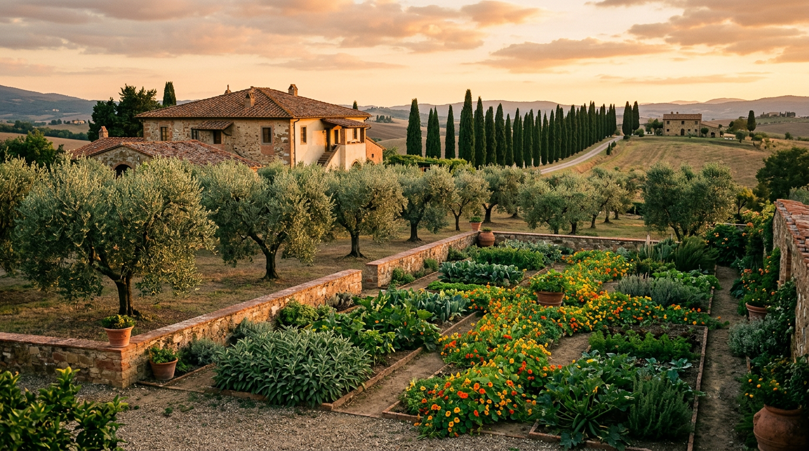

Il Borgo Laudato Si' — l'esperimento ecologico del Vaticano.

Dietro le mura delle Ville Pontificie, dove per secoli i papi hanno passeggiato in solitudine, oggi si coltivano ulivi, si munge il latte e si formano giardinieri. Il Borgo Laudato Si' è l'ultimo capitolo della storia di Castel Gandolfo: 55 ettari trasformati in un laboratorio di ecologia integrale, aperto a chiunque voglia vederlo.
Dal chirografo all'inaugurazione
Il progetto nasce il 2 febbraio 2023, quando Papa Francesco firma un chirografo per creare “un modello tangibile di pensiero, struttura e azione”, un luogo di dialogo e un esempio di cambiamento. Per animarlo istituisce il Centro di Alta Formazione Laudato Si', organizzazione scientifica, educativa e sociale con sede legale in Vaticano e sede operativa nelle Ville Pontificie, sotto la giurisdizione del Governatorato (Stato della Città del Vaticano). L'iniziativa non cambia la natura extraterritoriale della proprietà, fissata dal Trattato Lateranense.
Il 5 settembre 2025 è Leone XIV a inaugurare il Borgo. Nell'omelia lo definisce “un seme di speranza” lasciato in eredità dal suo predecessore, e descrive ciò che si vede come “una sintesi di straordinaria bellezza” in cui spiritualità, natura, storia, arte, lavoro e tecnologia coabitano in armonia (Santa Sede, omelia di Leone XIV). La parola “borgo” non è casuale: indica “un luogo di vicinanza e prossimità conviviale”.
Giardini, campi e fattoria
I 55 ettari si dividono in 35 di giardini all'italiana e circa 20 di terreno agricolo, con 1.500 ulivi, oltre 3.000 varietà di piante, vigne biodinamiche realizzate dall'Università di Udine e una grande serra alimentata dal fotovoltaico. L'irrigazione è pensata per gravare il meno possibile sul vicino lago Albano (Vatican News). Nella fattoria vivono mucche, cavalli, asini e galline (USCCB): tra gli animali, galline originarie dell'isola di Giava, una pecora dal muso nero del Vallese, una vacca highlander e i cavalli donati al Papa da Toledo e Siviglia (Vatican News).
Il progetto prevede che i prodotti della fattoria, tra cui formaggio, olio e vino, siano venduti al pubblico con il marchio Laudato Si', e che i profitti non arricchiscano pochi ma tornino a sostenere programmi e lavoratori (USCCB).
“Un seme che può portare frutti di giustizia e di pace.”Leone XIV, omelia di inaugurazione, 5 settembre 2025
Un luogo di formazione
Il progetto poggia su tre pilastri: formazione all'ecologia integrale, economia circolare e generativa, sostenibilità ambientale e sociale. Il Borgo è aperto a tutti, “senza distinzione di credo, ceto sociale, provenienza”, e vuole diventare “un modello di conversione ecologica per tutti anche per coloro che non vivono un'esperienza di fede”, come spiegava nel 2024 il direttore generale Fabio Baggio (Vatican News). Oggi cardinale, Baggio guida il Centro insieme a padre Manuel Dorantes, direttore amministrativo (USCCB).
Il cuore del Borgo è sociale. Il Centro offre corsi gratuiti di formazione al lavoro, con tirocinio e inserimento, in giardinaggio, agricoltura, catering e visite guidate. Sono rivolti soprattutto a migranti, rifugiati, minori non accompagnati, donne sopravvissute alla violenza, persone inoccupate, persone con disabilità ed ex detenuti (Vatican News). I primi corsi per giardinieri, partiti nel 2024, duravano 100 o 160 ore, e ogni partecipante viene accompagnato per un anno nei primi mesi di lavoro (Vatican News).
Il Borgo è anche luogo di incontro. Dal 17 al 19 giugno 2026 ha ospitato la prima edizione dei Borgo Laudato Si' Dialogues, forum internazionale con l'Università di Notre Dame e dirigenti d'impresa, accademici e società civile (Vatican News). L'11 luglio 2026 Leone XIV vi ha pranzato con 200 persone in condizioni di fragilità, tra cui 35 bambini (Vatican News).
Cosa si vede
La visita unisce storia e paesaggio: i giardini all'italiana, i resti della villa di Domiziano e il criptoportico lungo circa 120 metri dove l'imperatore passeggiava al coperto (Vatican News). Il percorso è costruito su una “grammatica” di 30 parole chiave tratte dall'enciclica, come acqua, aria, albero, accoglienza e cura (Vatican News).
Come prenotare
L'ingresso è in Via Massimo D'Azeglio, a Castel Gandolfo. Si può scegliere tra passeggiata guidata a piedi, visita con mezzo ecologico o visita guidata per gruppi, con prenotazione online sul sito ufficiale. Dal 30 marzo 2026 l'orario indicato è dal lunedì al venerdì 10-14 e il sabato 10-16, con ultimo ingresso un'ora prima della chiusura; l'orario invernale cambia di solito a fine ottobre, quindi conviene verificarlo prima di partire. Per informazioni: tours@borgolaudatosi.va, telefono +39 06 6988 7835 (Centro Laudato Si', visite).